class: center, first-slide name: intro <h1>L’Ontologie d’Alerte Choucas : <br>de la modélisation des connaissances à un outil support d’un raisonnement géovisuel</h1> <h3>Application à la recherche de victime en haute-montagne</h3> <br> <hr style="width: 40%;"> <h4 style="margin-top: 3px;">SAGEO 2019 - Clermont-Ferrand - 14/11/2019</h4> <h3> Matthieu V<span class="petite-maj">iry</span><sup>1,2</sup> & Marlène V<span class="petite-maj">illanova-</span>O<span class="petite-maj">liver</span><sup>1</sup></h3> <p style="font-size: 0.7em;"> <span>1. <b>LIG</b>, Univ. Grenoble Alpes, CNRS, Grenoble INP</span><br> <span>2. <b>PACTE</b>, Univ. Grenoble Alpes, CNRS, Sciences Po Grenoble</span> </p> <img src="img/label-ANR.png" class="anr-img" /> <span class="anr-text"><i>ANR-16-CE23-0018</i></span> <p style="margin: auto;"><img src="img/logo-choucas.png" class="choucas-logo" /></p> <p style="margin:auto;padding:0;"></p> --- name: plan-annonce <h3>Plan</h3> <br><br> 1. Contexte de recherche 2. Modélisation de l'*alerte* 3. Matérialisation dans un prototype d'interface 4. Bilan, perspectives, discussion ??? Attaquons tout de suite avec le plan de ma présentation ! - Je vais d'abords vous parlez rapidement du contexte dans le quel se déroule mes recherches - les habitués de SAGEO ont d'ailleurs déjà du entendre parler de l'ANR CHOUCAS lors des deux précédentes éditions. - Puis nous rentrerons dans le vif du sujet avec l'Ontologie d'Alerte Choucas - enfin je présenterai quelques propositions de matérialisation des concepts formalisés précédemment dans un prototype d'interface ; - la dernière partie présentera les suites à donner à au travail présenté aujourd'hui -- <p style="margin: auto; position: absolute; right: 150px; top: 375px;">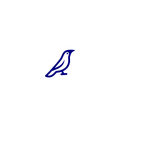</p> -- <p style="margin: auto; position: absolute; right: 150px; top: 375px;">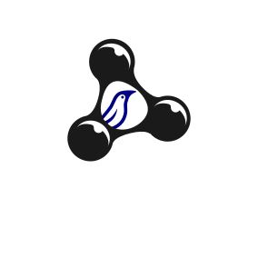</p> -- <p style="margin: auto; position: absolute; right: 150px; top: 375px;">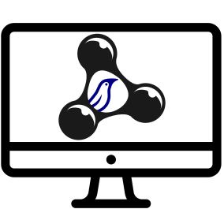</p> -- <p style="margin: auto;"><img style="width: 19%; position: absolute; right: 50px; top: 234px;" src="img/image_plan4.png" /></p> --- name: plan1 <!-- <h3>Plan</h3> --> <br><br><br><br><br> 1. <span class="subtitle-here">Contexte de recherche</span> 2. Modélisation de l'*alerte* 3. Matérialisation dans un prototype d'interface 4. Bilan, perspectives, discussion ??? D'abords le contexte de recherche donc ! --- class: l-p-margin name: context2 <h3>Contexte de recherche (1)</h3> ➡️ __ANR CHOUCAS__ : *Intégration de données hétérogènes et raisonnement spatial pour l'aide à la localisation des victimes en montagne* (Olteanu-Raimond *et al.*, 2017) <br> ➡️ Participation du **PGHM** (*Peloton de Gendarmerie de Haute-Montagne*) de Grenoble ??? - Mes travaux se déroulent dans le cadre de l'ANR CHOUCAS, qui visent à améliorer la localisation des victimes en zone de montagne. - Une des originalité du projet tiens dans la participation du PGHM via un secouriste référent à Grenoble. Cela nous permet d'avoir une démarche centrée utilisateur, focalisée sur les besoins utilisateur. -- <br> ➡️ Description de la localisation de la victime en langage naturel (environnement immédiat, itinéraire suivi, etc.) lorsque localisation GPS n'est pas possible</p> ??? Lorsqu'on parle "localisation de victime en montagne" on parle du cas ou une personne (parfois la victime) demande l'intervention des secours mais ne connait pas sa localisation précise. La localisation est ainsi décrite en référence à l'environnement immédiat et à l'itinéraire parcouru : "je suis sur un sentier de randonnée", "je vois un lac", "je suis parti il y a plusieurs heures", etc. Le caractère imparfait de ces descriptions est parfois amplifié par une faible connaissance de la montagne, de la peur ou du stress (nuit qui tombe, batterie de téléphone qui diminue, etc.) voir d'éventuelles blessures. -- Les secouristes doivent interprêter ces indices (parfois en consultant des sources de données variées : cartes topographique, guides papiers, etc.) <div style="text-align: center;position: absolute;bottom: 0px;right: 180px;"> 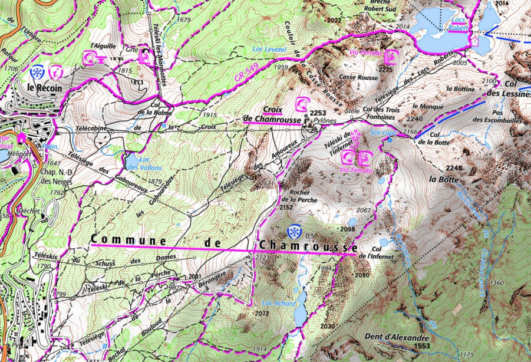 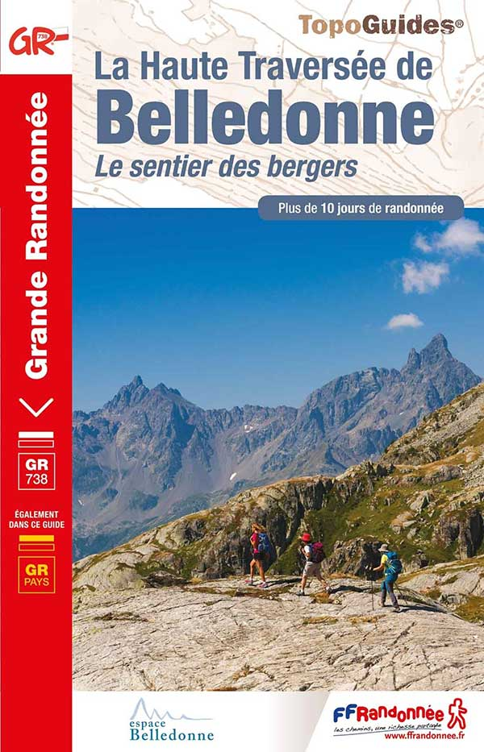 </div> ??? Les secouristes qui traitent cet appel doivent trouver la position de la victime en croisant ces différentes informations ; pour celà ils utilisent une interface affichant carte topographique ou orthophotos ainsi que quelques couches métiers ; ils consultent parfois d'autres sources d'informations : guides papiers ou sites communautaires. --- name: context3 <h3>Contexte de recherche (2)</h3> <br> <u>Demande sociétale</u> : Amélioration de la capacité de réponse à une alerte pour optimiser les moyens engagés -- <br><br><br> <u>Mon objectif</u> : **Proposer des méthodes permettant d'accompagner le raisonnement du secouriste lors d'une alerte** <br> <div class="small"> <u>Plus précisément</u> : <ul> <li><strong><i>Identifier les concepts du raisonnement humain, mobilisés lors d’une recherche de localisation, à modéliser pour accompagner cette tâche</i></strong></li> <br> <li>Proposer des techniques d’acquisition et de traitement des données pour faciliter cette tâche</li> <br> <li>Proposer des techniques de restitution géovisuelle permettant de donner à voir des informations en vue d'une prise de décision</li> </ul> </div> ??? Dans le cadre du projet CHOUCAS on est donc face à une demande sociétale importante ; en effet ces travaux visent à améliorer la capacité de réponse à une alerte pour optimiser les moyens engagés et sauver des vies. J'effectue ces recherches dans le cadre ma thèse en informatique et j'ai pour principal objectif de "Proposer des méthodes permettant d'accompagner le raisonnement du secouriste lors d'une alerte" Pour celà je dois passer pas plusieurs étapes; qui sont en quelques sortes mes sous objectifs actuels. Les travaux que je vais vous présenter aujourd'hui s'inscrivent essentiellement dans le cadre du 1er objectif ; ça m'offre aussi un cadre pour travailler et tester les propositions de mes deux objectifs suivants. * identifier les concepts du raisonnement humains, mobilisés lors d'une recherche de localisation, à modéliser pour accompagner cette tâche, * proposer des techniques d’acquisition et de traitement des données (d’exploitation des connaissances de nature imparfaites) pour faciliter cette tâche * proposer des techniques de restitution géo-visuelle permettent de donner à voir de l’information en vue d'une prise de décision --- name: plan2 <!-- <h3>Plan</h3> --> <br><br><br><br><br> 1. Contexte de recherche 2. <span class="subtitle-here">Modélisation de l'*alerte*</span> 3. Matérialisation dans un prototype d'interface 4. Bilan, perspectives, discussion <br><br><br> <div style="margin: 30px; text-align: center;"> <h3>➤ Quels concepts du raisonnement humain, mobilisés lors d’une recherche de localisation, sont à modéliser pour accompagner cette tâche ?</h3> </div> ??? Venons-en maintenant au faits et à la formalisation des concepts lié à une *alerte*. --- name: ontology-intro2 ### L'Ontologie d'Alerte Choucas (OAC) - État de l'art et positionnement <br> ➡️ Pré-requis à une visualisation intelligente : **formalisation de la connaissance du domaine**, **choix de techniques et méthodes adaptées aux tâches spécifiques devant être réalisées**, etc. (Adrienko & Adrienko, 2007) <br> ➡️ Pour l'organisation et gestion des opérations de secours, caractère intéressant : * de **visualisation 3D** ainsi que de la **possibilité de décoder des requêtes effectuées en langague naturel** (Löffler *et al.*, 2007) * des **approches à base d'ontologies** + **besoin de supporter efficacement le raisonnement spatio-temporel des secouristes** (Konstantopoulos *et al.*, 2006) <br> ➡️ Approche comparable à (Abi-Zeid *et al.*, 2010) qui va **de la modélisation des connaissances à sa mise à disposition dans un prototype d'interface de recherche interactive**. ??? Des travaux ont déjà été réalisée concernant l'organisation des secours et l'aide à la décision dans la gestion de crise. Ces travaux identifient notamment des pré-requis à des visualisations intelligentes permettant d'accompagner le travails des sauveteurs. Une partie de ces travaux s'intéresse toutefois à l'organisation opérationelle des secours (localisation des moyens disponibles, localisation des unités sur le terrain, etc.) qui est hors du scope de notre projet. On note toutefois que des auteurs relève le besoin d'aller plus loin pour supporter le raisonnement spatial des secouristes ; aussi bien grace à la formalisation qui est effectué que grâce aux outils qui sont employés (visualisation 3D ; etc.) L'approche que nous suivons comporte des similitudes avec celle de Abi-Zeid *et al.* : utilisation d'ingénieurerie de la connaissance pour acquérir, structurer et modéliser la connaissance expertes des sauveteurs et l'implémenter dans un prototype de recherche interactive. Les auteurs identifient l'absence de possibilité d'allouer un degré de confiance aux scénarios de recherche ; nous espérons, de notre coté, donner à l'utilisateur la possibilité d'attribuer une confiance à chaque indice qu'il va mobiliser. --- name: ontology-intro ### L'Ontologie d'Alerte Choucas (OAC) - Objectifs <br><br> - Identifier et formaliser les concepts impliqués dans le traitement d’une alerte par un secouriste du PGHM<br>* ➡️ doit intégrer des concepts liés à la restitution d’informations et aux interactions proposées dans l’outil puisqu’ils sont des vecteurs de ce raisonnement* <br> - Faire le lien entre les partenaires du projet <br> - Garantir l'interopérabilité des développements effectués <br> - Offrir un cadre pour prototyper UI et pour analyser les actions qui y seront réalisées ??? Notre travail a pour vocation de formaliser les concepts impliqués dans le traitement d’une alerte par un secouriste du PGHM. Ces concepts sont ceux sur lesquels se base le raisonnement du secouriste, opéré dans un environnement de géovisualisation. La formalisation intègre ainsi des concepts liés à la restitution d’informations et aux interactions proposées dans l’outil puisqu’ils sont des vecteurs de ce raisonnement. --- name: ontology-intro3 ### L'Ontologie d'Alerte Choucas (OAC) - Verrous <br><br> <span style="margin-right: 5px;">➡️</span>Quels concepts formaliser pour fournir un outil d'analyse géovisuel adapté au besoin exprimé ? <br> <span style="margin-right: 5px;">➡️</span>Comment intégrer le caractère imparfait des informations traitées ? <br> <!-- <span style="margin-right: 5px;">➡️</span>Comment matérialiser cette formalisation dans un outil qui accompagne, voir améliore, le raisonnement ? --> <span style="margin-right: 5px;">➡️</span>Comment utiliser la représentation des connaissances réalisée pour guider le développement d'un outil qui accompagne, voir améliore, le raisonnement de l'utilisateur ? ??? Les verrous scientifiques auquel nous nous heurtons concernent spécifiquement : - la modélisation à effectuer pour fournir un outil d'analyse géovisuel adapté au besoin exprimé - l'intégration du caractère imparfait des informations traitées - l'utilisation, à la fois efficace et à la fois correcte, du modèle que je vais vous présenter, pour guider le dévelopement d'un outil qui accompagne voir qui améliore le raisonnement --- class: center, no-margin, small-padding name: ontology-img1 <p style="margin: 0"> <img style="width: 105%;position: absolute;left: -27px;" src="img/fig1.svg" /> </p> ??? Nous avons modélisé une trentaine de concepts et une quarantaine de propriétés d'objets, souvent sous la forme de restrictions, permettant d'introduire des relations entre ces concepts et de structurer le modèle mentale qu'on propose au secouriste. Quand je parle restrictions, c'est à dire par exemple qu'une hypothèse de recherche ne peut contenir qu'une seule zone initiale de recherche ; la création d'une nouvelle ZIR correspondant à la création d'une nouvelle hypothèse de recherche, etc. Et qu'actuellement l'alerte que nous modélisons ne permet la prise en compte que d'une seule victime (ça peut bien entendu être un groupe d'individus qui sont perdus ensemble ; c'est alors un groupe cohérent de victimes). --- class: center, no-margin, small-padding name: ontology-img-alerte <p style="margin: 0"> <img style="width: 105%;position: absolute;left: -27px;" src="img/fig1_highlight_alerte.svg" /> </p> ??? En partant du concept d'Alerte, volontairement localisé vers le centre-haut de l'image, il est possible de se faire une idée de l'ordre dans lequel ces concepts sont généralement mobilisés par la secouriste ; et c'est en essayant de respecter +/- cet ordre que je vais vous présenter quelques-uns de ces concepts : - Alerte : ensemble du processus de recherche de la victime, de l'appel du requérant jusqu'à la fin de l'alerte -- class: center, no-margin, small-padding name: ontology-img-requerant <p style="margin: 0"> <img style="width: 105%;position: absolute;left: -27px;" src="img/fig1_highlight_requerant.svg" /> </p> ??? - Requérant : c'est la personne qui prévient les secours -- class: center, no-margin, small-padding name: ontology-img-victime <p style="margin: 0"> <img style="width: 105%;position: absolute;left: -27px;" src="img/fig1_highlight_victime.svg" /> </p> ??? - Victime : c'est la personne perdu, dont la localisation est à déterminer -- class: center, no-margin, small-padding name: ontology-img-hypothese <p style="margin: 0"> <img style="width: 105%;position: absolute;left: -27px;" src="img/fig1_highlight_hypothese.svg" /> </p> ??? - Hypothèses de recherche : au cours d'une alerte, c'est un ensemble d'indices considérés, au sein d'une Zone Initiale de Recheche, en vue d'obtenir la Zone de localisation probable de la victime -- class: center, no-margin, small-padding name: ontology-img-ZIR <p style="margin: 0"> <img style="width: 105%;position: absolute;left: -27px;" src="img/fig1_highlight_ZIR.svg" /> </p> ??? - Zone Initiale de Recherche : c'est la portion de territoire, définie au début d'une hypothèse de recherche, dans laquelle la victime est censé se trouver. -- class: center, no-margin, small-padding name: ontology-img-indice <p style="margin: 0"> <img style="width: 105%;position: absolute;left: -27px;" src="img/fig1_highlight_indice.svg" /> </p> ??? - Indice : c'est un fragment de discusours du réquérant (qui dialogue avec les secours) et qui décrit la position actuelle ou une position passée de la victime. -- class: center, no-margin, small-padding name: ontology-img-rl <p style="margin: 0"> <img style="width: 105%;position: absolute;left: -27px;" src="img/fig1_highlight_relation_localisation.svg" /> </p> ??? - Un indice est notamment caractérisé par une relation de localisation (telle que voir, être à coté de, etc.) entre des entités spatiales que nous appelons Site et Cible. -- class: center, no-margin, small-padding name: ontology-img-es <p style="margin: 0"> <img style="width: 105%;position: absolute;left: -27px;" src="img/fig1_highlight_es.svg" /> </p> ??? Le site étant généralement la victime et la cible peut correspondre soit à une entité Spatiale que l'on qualifie de Repère (lorsqu'elle désigne une entités nommés et ce sans abiguité de la part du requerant) ou de candidates (lorsqu'elle désigne un individu non nommé au sein d'un type ou d'une catégorie d'objets). Ce indices ont vocation à être transformer en une zone de localisation (dite comptabile) : c'est la zone dans laquelle est censée se trouver la victime au regard de l'indice en question. --- name: ontology-suite2 ### L'Ontologie d'Alerte Choucas (OAC) - Interopérabilité - *Ontologie des Objets de Référence (OOR)*<br>(Lot 3 - LASTIG - dans la continuité de Mustière *et al.*, 2010, et de Sinha *et al.*, 2018) - *Ontologie des Relations de Localisation (ORL)*<br>(Lot 3 - LASTIG - notamment dans la continuité de Bateman *et al.*, 2010) <p style="text-align: center;"> <img style="width: 72%;position: absolute;bottom: -1px;left: 135px;" src="img/fig1_interop.svg" /> </p> <!-- - Services (de spatialisation, de géoparsing, de géocodage, etc.), décrits par une taxonomie (Halilali *et al.*, 2018) --> ??? J'ai évoqué que deux de nos objectifs étaient d'assurer le lien entre le partenaire du projet et d'assurer l'interopérabilité des développements effectués par la suite ; L'Ontologie d'Alerte Choucas à notamment vocation à mobiliser d'autres ontologies conçues dans la cadre du projet CHOUCAS, c'est notamment le cas d'une Ontologie des Objets de Références permettant ... et d'une ontologie des Relations de Localisation. Actuellement nous avons quelques instances de Type de Relations de localisation (Voir, entendre, être à proximité, etc.), quelques sous classe de Relation de localisation qui nous permettent de caractériser plus finement le la relation de localisation. Idem pour ce qui concerne les objets du territoire, nous avons actuellement une 15aine de catégorie (organisée en deux niveaux hiérarchiques), le dernier niveau de cette taxonomie étant celui qui contient les instances : nos "objets du territoire". --- name: plan3 <!-- <h3>Plan</h3> --> <br><br><br><br><br> 1. Contexte de recherche</span> 2. Modélisation de l'*alerte* 3. <span class="subtitle-here">Matérialisation dans un prototype d'interface</span> 4. Bilan, perspectives, discussion <br><br> <div style="margin: 30px; text-align: center;"> <h3>➤ Comment mobiliser cette ontologie pour résoudre un cas de recherche de victime ?</h3> </div> ??? Voyons maintenant comment mobiliser cette ontologie pour résoudre un cas de recherche de victime. --- name: plan31 <br><br><br><br> <span class="subtitle-here">3. Matérialisation dans un prototype d'interface</span><br> <ul> <li><strong>3.1 Méthodologie et vue d'ensemble du prototype</strong></li><br> <li>3.2 Informations concernant la victime</li><br> <li>3.3 Zone Initiale de Recherche</li><br> <li>3.4 Indices et Zones de Localisation</li> </ul> ??? D'abords la méthodologie utilisée. --- name: gaspar-JSONschemas1 ### Matérialisation - Création de schémas JSON et prototypage de l'UI <br> ➡️ Dériver des schémas JSON à partir des concepts de notre ontologie que nous voulons mobiliser dans l'interface. ➡️ Utiliser ces schémas JSON pour créer automatiquement, lorsque possible, les boîtes permettant d'instancier ces concepts. ??? Afin de respecter le modèle construit dans le cadre de l'ontologie d'Alerte choucas et pour fournir un environnement qui permettrait de l'instancier, nous avons décidé de dériver des schéma JSON des concepts de l'ontologie qu'on veux mobiliser directement dans l'interface. Ces schémas vont nous permettre de dériver des boites permettant d'instancier ces concepts. -- <br><br> <div style="text-align: center;"> <div> JSON schema - draft specification : https://json-schema.org/ <br><br><i>Une proposition de standard par l'IETF pour décrire et valider des documents JSON</i> <br><br> </div> </div> <br><br> ??? La proposition de spécification par l'Internet Engineering Task Force propose un standard pour décrire et valider les documents JSON. --- name: gaspar-JSONschemas2 ### Matérialisation - Création de schémas JSON et prototypage de l'UI <p style="margin: auto;"> 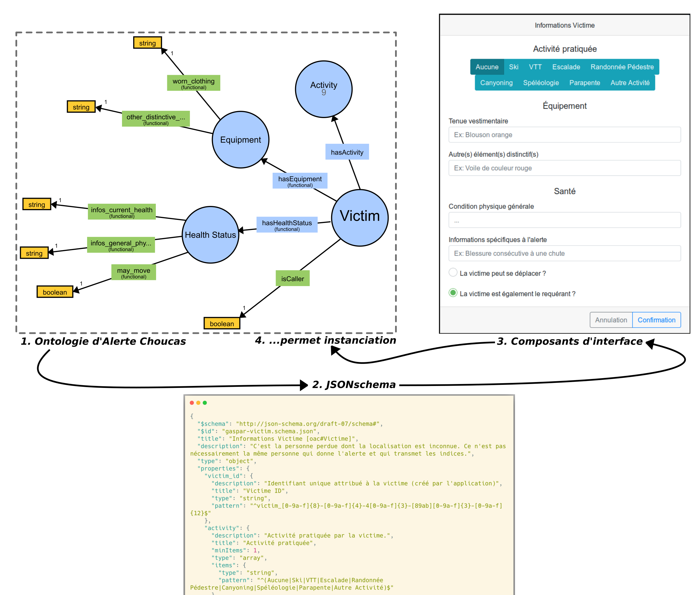 </p> ??? Semi-automatisation de la conversion de l'ontologie en JSON schema. Permet d'en dériver des boites de saisie et donc de mobiliser les concepts de manière conforme à l'ontologie (quasi-instanciation). Cette exemple marche bien pour notre concept de Victime pour lequel on peut dériver directement une boite de saisie. On verra plus tard lorsque je vous présenterai la boite permettant de créer un indice que cette démarche fonctionne également plutôt bien pour ce concept. --- name: gaspar-JSONschemas3 ### Matérialisation - Création de schémas JSON et prototypage de l'UI <p><br><br></p> ➡️ Appliqué à OAC : - Victime - Zone Initiale de Recherche - Indices (mobilise les concepts d'*Entité Spatiale*, de *Zone de Localisation Compatible*, de *Confiance*) - Zone de Localisation Probable (référence les *Zone de Localisation Compatible* qu'elle fusionne) - Hypothèse (une *Zone Initiale de Recherche*, une suite d'*Indices* et une *Zone de Localisation Probable*) - Alerte (une *Victime*, une ou plusieurs *Hypothèses*) ??? Ce procédé a été appliqué de manière à obtenir des schémas pour les concepts suivants. --- name: gapsar-intro ### GASPAR : un prototype d'interface d'analyse géovisuelle <br> ➡️ **_GASPAR_** : *__G__eoviz __A__pplication for __S__earching __A__nd __R__escuing __P__eople* <br> ➡️ Principales fonctionnalités utilisateur - Saisies des informations sur la victime et des indices de localisation - Transformation des indices en zone de localisation compatible - Fusion des zones de localisation compatible en zone de localisation probable - Visualisation 2D et/ou 3D - Sauvegarde / rechargement d'une alerte ??? Ce procédé nous a donc donner un base, un modèle de données utilisable pour prototyper l'interface utilisateurs et mettre en oeuvre notre proposition de modélisation de recherche de victimes. Ce prototype permet de traiter un cas d'alerte, de l'appel du requérant jusqu'à la détermination de la zone de localisation probable. - En effet, il est possible de saisir, dans l'interface, les informations sur la victime, la zone dans laquelle se déroule les reherches, ansi que les différents indices de localisation fournis par le requérant notamment saisissant l'indice en langage naturel dans un espace de type bloc note pour préremplir le formulaire permettant de choisir les options de création de l'indice. - Ces indices vont être transformés en zone de localisation dite compatibles - Fusion des zones de localisation compatible en une zone de localisation probable - Visualisation de ces différentes zones sur une vue 2d ou sur une vue terrain. - Le fait d'avoir bien fixé notre modèle de données et d'en dériver des composants nous permet également d'implémenter à moindre cout un système permettant de sauvegarder / recharger une Alerte ; ce qui s'avère assez pratique à des fins de comparaisons, de reproductions de comportements étranges, etc. --- name: gaspar-screenshot ### GASPAR - Vue d'ensemble <p style="position: relative;left: -50px;bottom: 10px;"> 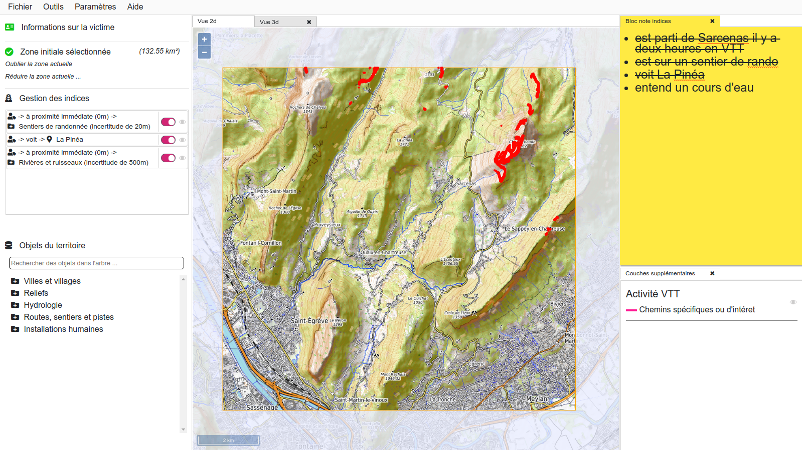 </p> --- name: gaspar-screenshot2 ### GASPAR - Vue d'ensemble <p style="position: relative;left: -120px;bottom: 70px;"> <img style="width: 130%;" src="img/overview_dessin_victime.svg" /> </p> --- name: gaspar-screenshot3 ### GASPAR - Vue d'ensemble <p style="position: relative;left: -120px;bottom: 70px;"> <img style="width: 130%;" src="img/overview_dessin_ZIR.svg" /> </p> --- name: gaspar-screenshot4 ### GASPAR - Vue d'ensemble <p style="position: relative;left: -120px;bottom: 70px;"> <img style="width: 130%;" src="img/overview_dessin_indices.svg" /> </p> ??? Notre interface donne également accès à la création d'indices et à l'affichages des indices déjà créés. --- name: gaspar-screenshot5 ### GASPAR - Vue d'ensemble <p style="position: relative;left: -120px;bottom: 70px;"> <img style="width: 130%;" src="img/overview_dessin_objets_territoire.svg" /> </p> --- name: gaspar-screenshot6 ### GASPAR - Vue d'ensemble <p style="position: relative;left: -120px;bottom: 70px;"> <img style="width: 130%;" src="img/overview_dessin_carte.svg" /> </p> --- name: gaspar-screenshot7 ### GASPAR - Vue d'ensemble <p style="position: relative;left: -120px;bottom: 70px;"> <img style="width: 130%;" src="img/overview_dessin_carte2.svg" /> </p> --- name: plan32 <br><br><br><br> <span class="subtitle-here">3. Matérialisation dans un prototype d'interface</span><br> <ul> <li>3.1 Méthodologie et vue d'ensemble du prototype</li><br> <li><strong>3.2 Informations concernant la victime</strong></li><br> <li>3.3 Zone Initiale de Recherche</li><br> <li>3.4 Indices et Zones de Localisation</li> </ul> --- ### Matérialisation de l'ontologie d'alerte - Informations sur la victime (1) <p style="text-align: center;"> <img style="width: 100%;" src="img/fig1_highlight_victime_activité.svg" /> </p> ??? Les concepts et les propriétés d'objets qui nous intéressent ici sont 'la victime', son éventuelle 'activité' et le fait que nous avons identifié et formalisé l'utilité d'afficher des couches d'informations spécifiques à ces activités. --- ### Matérialisation de l'ontologie d'alerte - Informations sur la victime (2) 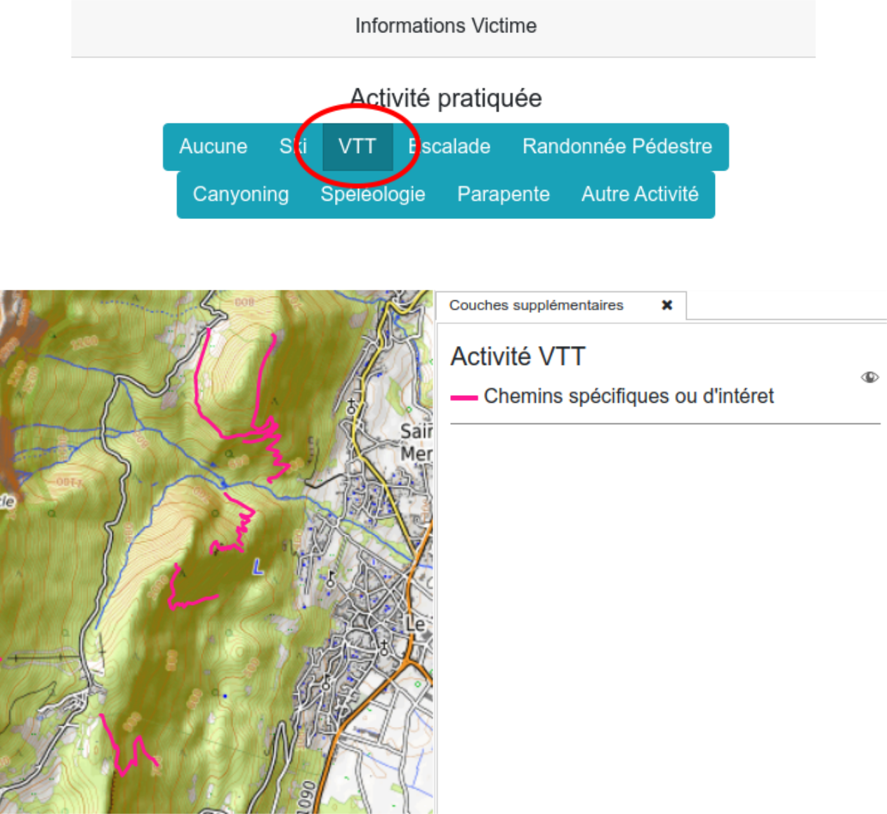 ??? Concrêtement ça se matérialise pour l'instant par l'affichage de couches d'intérêt, spécifique à chacune de ces activités. L'affichage est bien entendu désactivable. --- ### Matérialisation de l'ontologie d'alerte - Informations sur la victime (3) <br> ➡️ **Support du raisonnement géovisuel** : * Automatise / systématise une opération réalisée par les secouristes (*sur-imposition de couches métiers*) * Peut aider à délimiter utilement la Zone Initiale de Recherche * Affichage qui s'adapte au niveau de zoom <p> 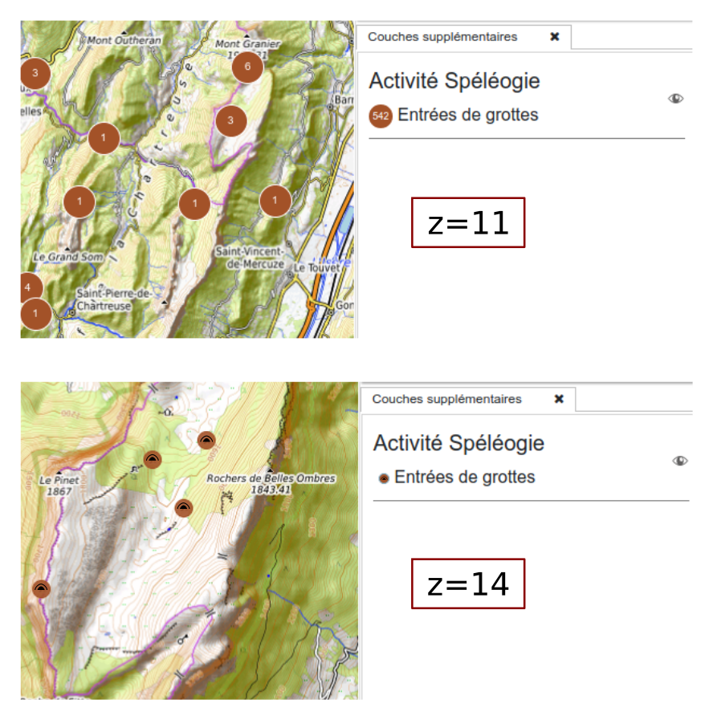 </p> ??? Par ailleurs certaines de ces couches disposent d'une mise en forme qui s'adapte au niveau de zoom, dans le but d'apporter des informations utiles au secouriste sans pour autant le submerger d'informations. --- name: plan33 <br><br><br><br> <span class="subtitle-here">3. Matérialisation dans un prototype d'interface</span><br> <ul> <li>3.1 Méthodologie et vue d'ensemble du prototype</li><br> <li>3.2 Informations concernant la victime</li><br> <li><strong>3.3 Zone Initiale de Recherche</strong></li><br> <li>3.4 Indices et Zones de Localisation</li> </ul> --- ### Matérialisation de l'ontologie d'alerte - Zone initiale de recherche (1) <p style="text-align: center;"> <img style="width: 100%;" src="img/fig1_highlight_ZIR.svg" /> </p> ??? Dans notre ontologie nous avons formalisé que la Zone Initiale de Recherche est la zone, éventuellement définie grossièrement, dans laquelle la victime est censée se trouver. --- ### Matérialisation de l'ontologie d'alerte - Zone initiale de recherche (2) <p style="text-align: center;"> 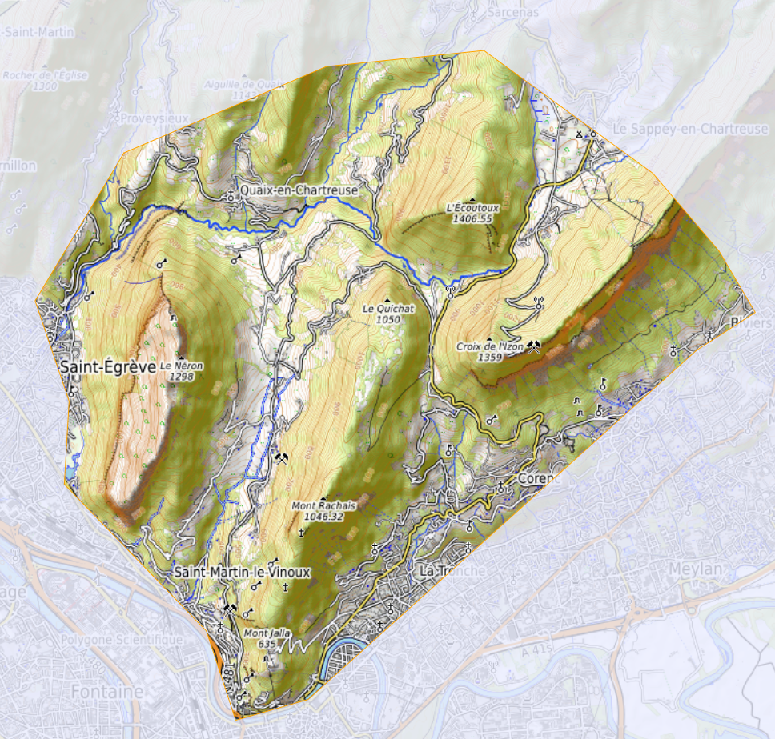 </p> ??? Nous avons décidé de proposer à l'utilisateur de définir cette zone, soit en utilisant, à un moment donné, l'emprise de la carte affichée à l'écran, soit en la dessinant avec des outils de dessin. --- ### Matérialisation de l'ontologie d'alerte - Zone initiale de recherche (3) <br> ➡️ **Support du raisonnement géovisuel** : * Focalisation de l'attention * Explicite une opération réalisée implicitement au préalable <br> ➡️ **Interopérabilité** : * Fourni une limite englobante pour les calculs à réaliser par les partenaires des Lots 2 et 3 (LASTIG et LIUPPA) <br> ➡️ **Fonctionnalités utilisateur** : * Peut être déssinée à main levée ou en utilisant l'emprise actuelle de la carte * Peut être réduite ou totalement redéfinie ??? La création de cette Zone Initiale de Recherche, indispensable pour ensuite convertir les indices donnés par le requérant en zones de localisation, va permettre de focaliser l'attention de l'utilisateur sur la zone de recherche et va également permettre de fournir une boite englobante aux calculs qui suivront. Enfin ce choix permet d'expliciter un comportement implicite chez le secouriste utilisateur, qui va a priori considérer une portion spécifique du territoire en fonction des premiers éléments d'une alerte (autour de telles localité ; dans tel massif ; etc.). --- name: plan34 <br><br><br><br> <span class="subtitle-here">3. Matérialisation dans un prototype d'interface</span><br> <ul> <li>3.1 Méthodologie et vue d'ensemble du prototype</li><br> <li>3.2 Informations concernant la victime</li><br> <li>3.3 Zone Initiale de Recherche</li><br> <li><strong>3.4 Indices et Zones de Localisation</strong></li> </ul> --- ### Matérialisation de l'ontologie d'alerte - Indice et zone de localisation (1) <p style="text-align: center;"> <img style="width: 100%;" src="img/fig1_highlight_indice.svg" /> </p> --- ### Matérialisation de l'ontologie d'alerte - Indice et zone de localisation (1) <p style="text-align: center;"> 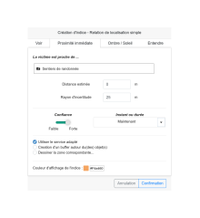 </p> --- ### Matérialisation de l'ontologie d'alerte - Indice et zone de localisation (1) <p style="text-align: center;"> <img style="width: 75%;bottom: 70px;position: relative;" src="img/boite_indice_dessin2.svg" /> </p> --- ### Matérialisation de l'ontologie d'alerte - Indice et zone de localisation (1) <p style="text-align: center;"> 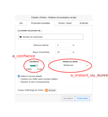 </p> --- ### Matérialisation de l'ontologie d'alerte - Indice et zone de localisation (1) <p style="text-align: center;"> 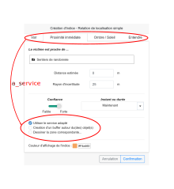 </p> --- ### Matérialisation de l'ontologie d'alerte - Indice et zone de localisation (2) <p style="text-align: center;"> 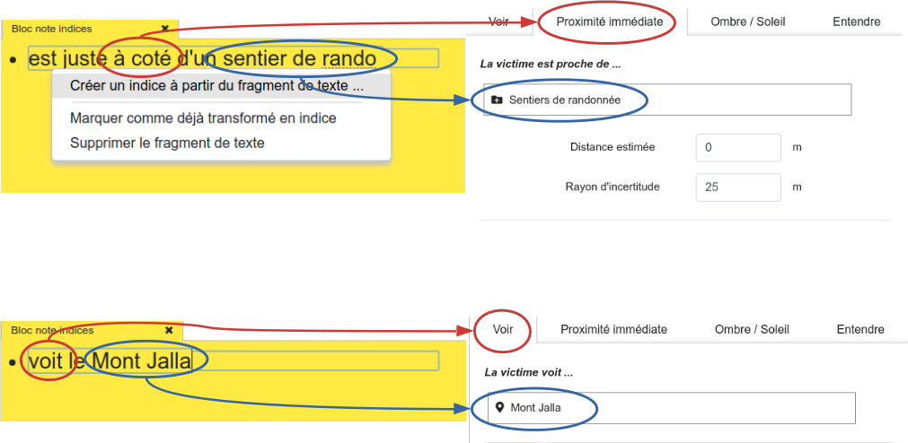 </p> -- <div style="text-align: center;"> <i>Actuellement réalisé avec la bibliothèque SpaCy (<a href="https://spacy.io/">https://spacy.io/</a>) - Fait l'objet de recherche de la part de nos partenaires (Lot 2 - LIUPPA)</i> </div> ??? --- ### Affichage des Zones de Localisation Compatible <p style="text-align: center;"> 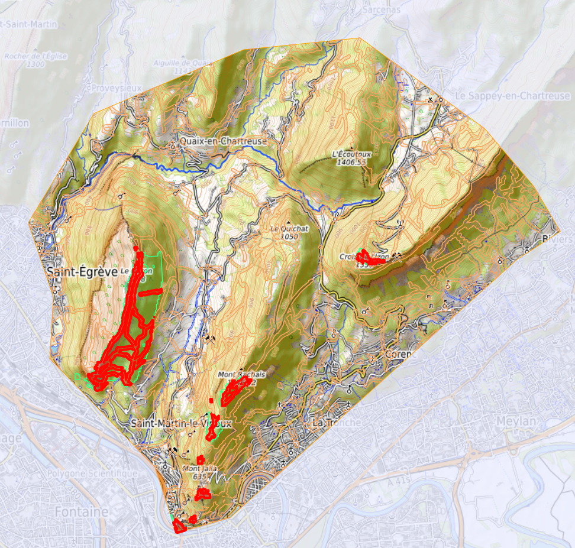 </p> ??? Le point spécifique de la représentation des Zones de localisation n'a volontairement pas été traité dans notre proposition. Les zones qui correspondent à chaque indice s'affichent actuellement dans une couleur définit en fonction du type d'objet mobilisé par l'indice. La Zone de Localisation Probable correspondant actuellement à l'intersection des Zones de Localisation Candidate s'affihent actuellement en rouge. Actuellement il s'agit de polygone, au format vecteur donc ; a terme les zone de localisation seront au format raster et contiendront des valeurs continues entre 0 et 1, ce qui nous posera d'autre problèmes de représentation. --- name: plan4 <!-- <h3>Plan</h3> --> <br><br><br><br><br> 1. Contexte de recherche</span> 2. Modélisation de l'*alerte* 3. Matérialisation dans un prototype d'interface 4. <span class="subtitle-here">Bilan, perspectives, discussion</span> --- class: list2-no-style, bilan ### Bilan - L'Ontologie d'Alerte Choucas (OAC), modélisant les connaissances relatives à la recherche de victime * ➡️ Une 30aine de concepts et une 40aine de relations, developpée en OWL2 * ➡️ Publiée : https://purl.org/oac -- - Une méthode permettant de dériver des schémas JSON de l'ontologie et de prototyper l'UI * ➡️ Dévelopement de l'outil guidé par OAC -- - Un prototype d'interface permettant d'instancier les concepts de l'ontologie et d'accompagner la recherche de victime * ➡️ **_GASPAR_** : *__G__eoviz __A__pplication for __S__earching __P__eople __A__nd __R__escuing* * ➡️ Démonstration vidéos : https://steamer.imag.fr/?page_id=792 * ➡️ Code source en ligne : https://github.com/mthh/gaspar ??? --- name: discussion ### Perpectives <br><br><br> <span style="margin-right: 5px;">➡️</span>Obtenir un retour d'expérience de la part du secouriste PGHM référent <br> <span style="margin-right: 5px;">➡️</span>Intégrer la modélisation d'un *itinéraire* effectuée par partenaires (Lots 2 et 3 - LASTIG et LIUPPA), la mettre a disposition dans l'interface <br> <span style="margin-right: 5px;">➡️</span>Activer le niveau de confiance intermédiaire<br> <br> <span style="margin-right: 5px;">➡️</span>Exploiter les ontologies du projet pour proposer au secouriste un indice pouvant être collecté ??? --- class: center, middle name: thankyou <img src="img/ttt_transp.png" style="left: -126px;width: 125%;position: relative;" /> ### Merci ! <h4 style="margin: 1px;"> 🖂 <a href="mailto:matthieu.viry@univ-grenoble-alpes.fr">matthieu.viry@univ-grenoble-alpes.fr</a></h4> <h4 style="margin: 1px;"> 🖂 <a href="mailto:marlene.villanova-oliver@univ-grenoble-alpes.fr">marlene.villanova-oliver@univ-grenoble-alpes.fr</a></h4> <br> <p>Présentation : <a href="https://mthh.github.io/sageo2019/">https://mthh.github.io/sageo2019/</a> --- class: biblio ### Bibliographie (1) <p><br></p> - Andrienko N., Andrienko G. (2007). **Intelligent Visualisation and Information Presentation for Civil Crisis Management**. Transactions in GIS, vol. 11, nᵒ 6, décembre 2007, p. 889‑909, https://doi.org/10.1111/j.1467-9671.2007.01078.x - Bateman J.A., Hois J., Ross R., Tenbrink T. (2010). **A linguistic ontology of space for natural language processing**. Artificial Intelligence, 174, p. 1027–1071, https://doi.org/10.1016/j.artint.2010.05.008 - Ben-Haim Y. (2006). **Info-Gap Decision Theory: Decisions Under Severe Uncertainty**, 2nd edition, Academic Press, London, ISBN 0-12-373552-1. - Bunel M., Olteanu-Raimond A.-M., Duchêne C. (2018). **Référencement spatial indirect : modélisation à base de relations et d’objets spatiaux vagues**. SAGEO 2018, 6-9 Novembre 2018, Montpellier. - Bunel M., Duchêne C., Olteanu-Raimond A-M., Villanova-Oliver M. Bonhoure G., Jouan T. (2019). **An approach for identifying and analysing reference features and spatial relations used in mountain emergency calls**. ICC 2019,15-20 Juillet 2019, Tokyo, Japon. - Caglioni M., Fusco G. (2014). **Formal Ontologies and Uncertainty**. In Geographical Knowledge. Tema. Journal of Land Use, Mobility and Environment, 2014: INPUT 2014 - Smart City: Planning for Energy, Transportation and Sustainability of the Urban System, https://doi.org/10.6092/1970-9870/2530 --- class: biblio ### Bibliographie (2) <p><br></p> - Çöltekin A., Bleisch S., Andrienko G., Dykes J. (2017). **Persistent Challenges in Geovisualization – a Community Perspective**. International Journal of Cartography , vol. 3, nᵒ sup, p. 115‑39, https://doi.org/10.1080/23729333.2017.1302910 - Halilali M. S., Gouardères E., Devin F., Gaio M. (2018) **Plateforme logicielle pour l'intégration et la composition de services géospatiaux**. SAGEO 2018, 6-9 Novembre 2018, Montpellier. - Jousselme A.-L., Pallotta G., Locke J. (2018). **Risk Game: Capturing impact of information quality on human belief assessment and decision making**. International Journal of Serious Games, vol. 5, nᵒ 4, p. 23‑44, https://doi.org/10.17083/ijsg.v5i4.258 - Kinkeldey C., MacEachren A. M., Riveiro M., Schiewe J. (2017). **Evaluating the Effect of Visually Represented Geodata Uncertainty on Decision-Making: Systematic Review, Lessons Learned, and Recommendations**. Cartography and Geographic Information Science, vol. 44, nᵒ 1, p. 1‑21, https://doi.org/10.1080/15230406.2015.1089792 - Konstantopoulos S., Paliouras G., Chatzinotas S. (2006). **SHARE-ODS: An Ontology Data Service for Search and Rescue Operations**. SETN, 2006. - Löffler J., Ernst V. Schon J., Pottebaum J., Koch R. (2007). **Intelligent Use of Geospatial Information for Emergency Operation Management**. Proceedings of the fourth international conference on information systems for crisis management, ISCRAM, 2007. --- class: biblio ### Bibliographie (3) <p><br></p> - Medad A., Gaio M., Le Nir Y., Mustière S. (2018). **Appariement automatique de données hétérogènes: textes, traces GPS et ressources géographiques**. SAGEO 2018, 6-9 Novembre 2018, Montpellier. - Mustière S., Abadie N., Aussenac- Gilles N., Bessagnet M.-N., Kamel M., et al. (2011). **Analyses linguistiques et techniques d'alignement pour créer et enrichir une ontologie topographique**. Revue Internationale de Géomatique, 2011, Lavoisier, vol. 21, n°2, p. 155-180. - Olteanu-Raimond A.-M., Davoine P.-A., Gaio M., Gouardères E., Van Damme M.-D., Villanova-Oliver M., Brasebin M., et al. (2017). **Projet CHOUCAS : Intégration de données hétérogènes et raisonnement spatial pour l’aide à la localisation des victimes en montagne**. SAGEO 2017, Novembre 2017, Rouen. - Sinha G., Arundel S. T., Hahmann T., Usery E. L., Stewart K., Mark D. M. (2018). **The Landform Reference Ontology (LFRO): A Foundation for Exploring Linguistic and Geospatial Conceptualization of Landforms** (Short Paper). 10th International Conference on Geographic Information Science (GIScience 2018), Leibniz International Proceedings in Informatics (LIPIcs). - Viry M., Villanova-Oliver M., Gautier J., Sreeves M., Davoine P.-A. (2019). **Improving the search for victims in mountain with geovisualization and competing hypotheses management**. ICC 2019, 15-20 Juillet 2019, Tokyo, Japon. --- class: center, middle name: thankyou 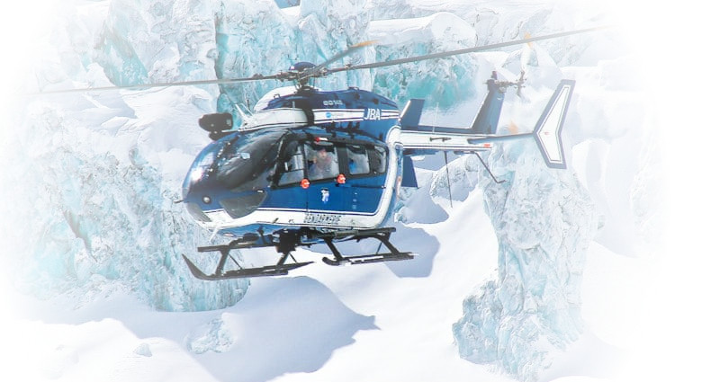 <h3>Extra-slides</h3> <br> --- name: extra-slides1a ### Conversion OWL2 vers JSONschema <br> * Faisable en raison des choix de modélisation que nous avons effectué (cardinalité, concepts définit en utilisant des restrictions sur certaines propriétés) <br> * Faisable également car correspondance facile entre des concepts et/ou des types décrit de part et d'autres <br> --- name: extra-slides1b ### Génération d'éléments d'interface à partir de JSONschema <br> * Des solutions existent en ligne : https://json-schema.org/implementations.html#web-ui-generation (pour `React`, `angularJS`, ...) <br> * On a utilisé une solution "maison" car c'était peu couteux et plus facilement adaptable à nos besoin --- name: extra-slides2 ### Choix de l'ontologie comme formalisme <br><br> * Fournir une description formelle des concepts, termes et relations au sein du domaine de connaissances donné ? **Cadre du RDF est adapté** <br> * Relations entre les classes, cardinalité, égalité, typage des propriétés, caractéristiques de propriétés (symétrie, ..) ? **OWL2** <br> * Formalisme déjà utilisé par d'autres membres du projets <br> ➡️ OWL2 choisi pour des raison d'interopérabilité, d'expressivité et en suivant recommandations actuelles concernant la représentation des connaissances (W3C par exemple) --- name: extra-slides3 ### Si la victime n'est pas dans la Zone Initiale de Recherche ? Si le croisement des indices ne permet pas d'obtenir une Zone de Localisation Probable ? <br><br> ➡️ Sans changer de Zone Initiale de Recherche : * Chaque indice peut-être modifié * Chaque indice peut-être désactivé *(dans les deux cas, la Zone de Localisation Probable est recalculée automatiquement)* <br><br><br> ➡️ Si nécessité de changer la Zone Initale de Recherche : * Indices peuvent être recalculés automatiquement dans la nouvelle zone. --- name: extra-slides5 ### Comment sont réalisés les calculs des Zones de Localisation ? <br><br> Actuellement : - Buffer pour la "proximité immédiate" - GRASS `r.viewshed` et `r.sun` pour les calculs de visibilité et de zones d'ombre / soleil <br><br> Dans le cadre du projet : - Les calculs des Zones de Localisation seront réalisées par des partenaires (Lot 3 - LASTIG)